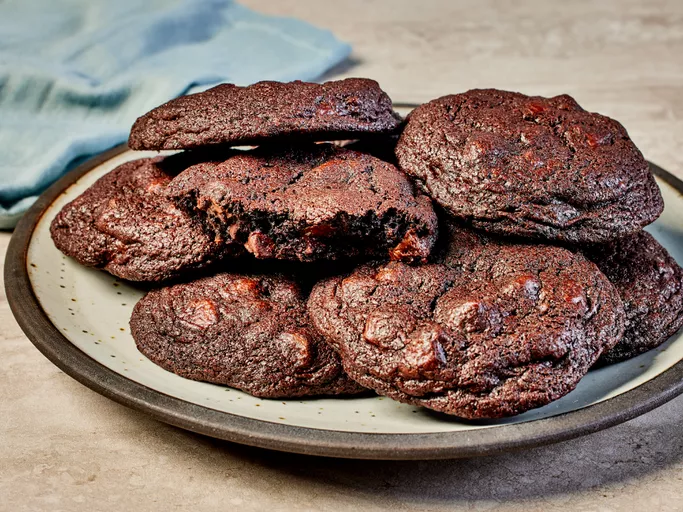
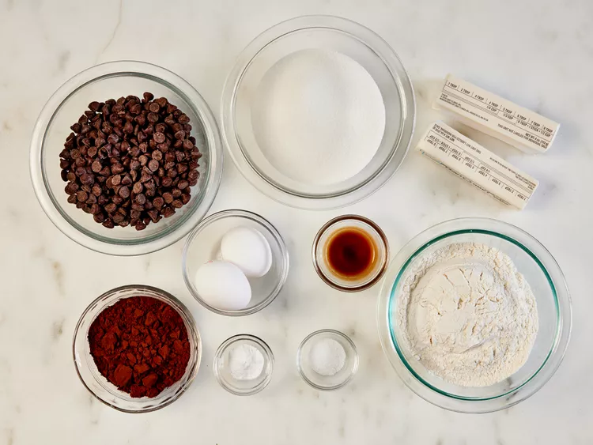
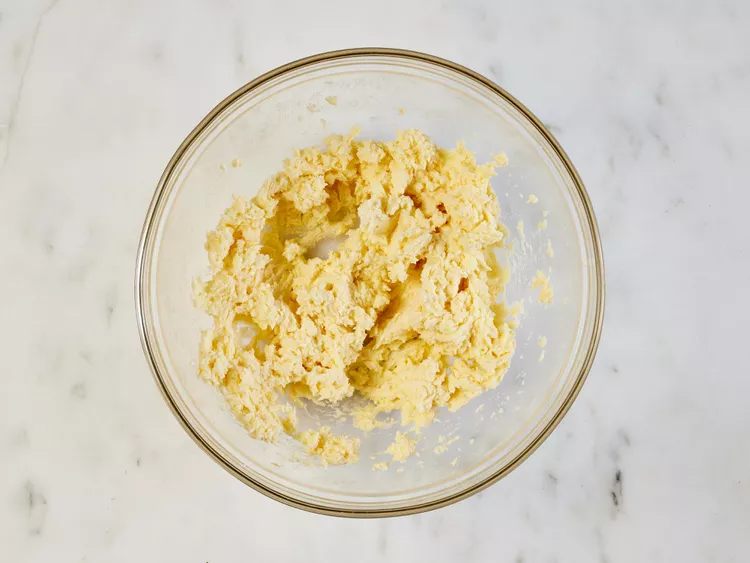
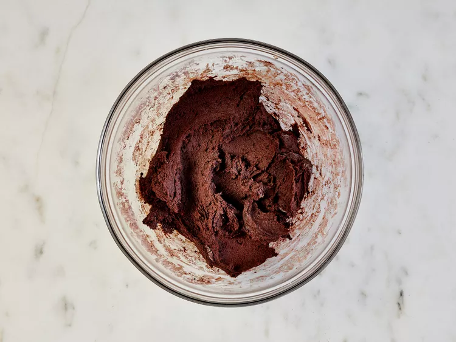
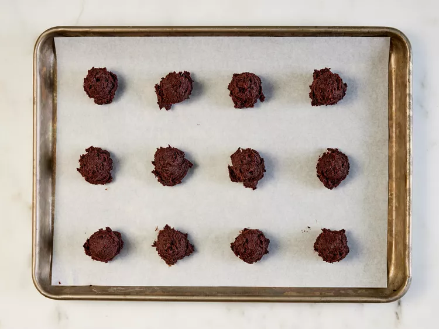
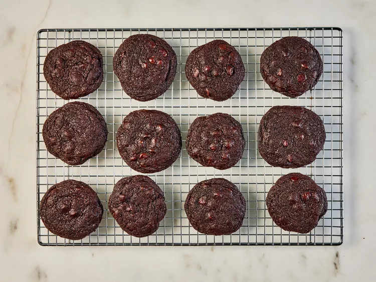

Chocolate Chocolate Chip Cookies

Description:
These chewy chocolate chocolate chip cookies are made with cocoa powder and chocolate chips to guarantee chocolaty flavor in every bite. My kids love them!
Ingredients:
- Sugar: The recipe starts with 1 ½ cups white sugar.
- Butter: Beat the sugar with two sticks of softened butter.
- Eggs: Two eggs lend moisture and act as a binding agent, which means they help hold the dough together.
- Vanilla:: Vanilla extract enhances the overall flavor of the chocolate chocolate chip cookies.
- Flour: All-purpose flour gives the cookie dough structure.
- Cocoa powder: They wouldn't be chocolate chocolate chip cookies without cocoa powder!
- Baking soda: Baking soda acts as a leavener, which means it helps the cookies rise.
- Salt: A pinch of salt enhances the overall flavor, but it won't make the cookies taste salty.
- Chocolate chips: You'll need two cups of semisweet chocolate chips.
- Walnuts (optional): Walnuts are optional, but they add welcome crunch.
Steps:
- Gather all ingredients. Preheat the oven to 350 degrees F (175 degrees C).

- Beat sugar, butter, eggs, and vanilla in a large bowl until light and fluffy.

- Combine flour, cocoa powder, baking soda, and salt in another bowl; stir into butter mixture until well blended.

- Stir chocolate chips and walnuts into dough until evenly distributed. Drop rounded tablespoonfuls of dough 2 inches apart onto ungreased baking sheets.

- Bake in the preheated oven just until set, 8 to 10 minutes. Cool slightly on the cookie sheets before transferring to wire racks to cool completely.

- Enjoy!
Back to home